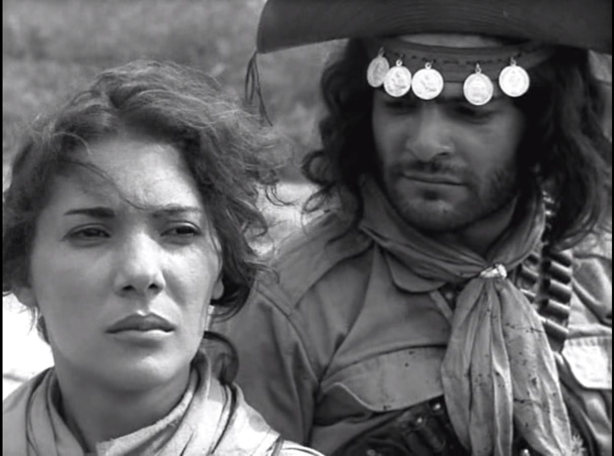

Deus e o Diabo na Terra do Sol: um Brasil que ainda está em debate
Da representação de um país em transformação ao reconhecimento de um clássico, a trajetória do filme revela diferentes formas de interpretar e preservar a memória brasileira.